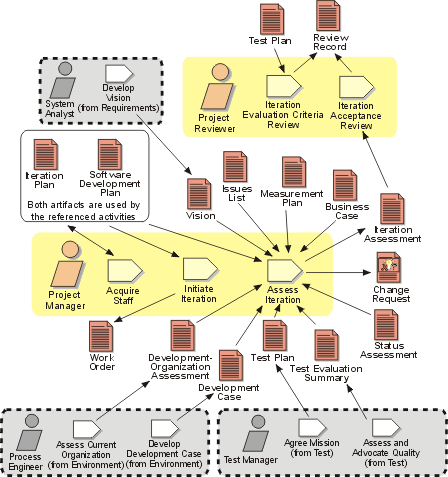

Disciplines >
Disciplines >
 Project Management >
Project Management >
 Workflow >
Manage Iteration
Workflow >
Manage Iteration
Disciplines >
Project Management >
Workflow >
Manage Iteration
Workflow Detail:
|
Topics |
 |
This workflow detail contains the activities that begin, end and review an iteration. The purpose is to acquire the necessary resources to perform the iteration (in Activity: Acquire Staff and Activity: Initiate Iteration), allocate the work to be done (in Activity: Initiate Iteration), and finally, to assess the results of the iteration in Activity: Assess Iteration. An iteration concludes with an Iteration Acceptance Review which determines, from the Iteration Assessment, whether the objectives of the iteration were met.
Optionally, in a lengthy iteration, the Project Manager may think it prudent to resynchronize the expectations of management, technical staff, customer and other stakeholders, by holding an Iteration Evaluation Criteria Review mid-way through the iteration. At this review, which is based mainly around the Test Plan, the project reveals the planned contents of the iteration in a very concrete way. This gives an opportunity for a 'mid-course correction', should misunderstandings have arisen over the intent of the Iteration Plan.
A mix of skills is needed for the activities in this workflow detail: although the Project Manager may rely on a human resources function to provide candidate project members, in the end the responsibility for selection is his or hers. Interviewing skills are valuable, as is a history of selecting good people. The Project Manager will need to show planning, leadership and team building capabilities to initiate the iteration - to allocate the work appropriately, and realize the abstract Iteration Plan in effective teams of people.
The evaluation criteria for an iteration should have been set objectively and clearly, so the assessment of an iteration requires the Project Manager to be analytic and equally objective.
The Project Reviewer for these reviews needs to be very experienced in the domain of the application, and able to sift out what is important and what can be ignored or relaxed. While none should be in any doubt about what worked and what failed in the iteration, all requirements are not of equal importance, nor are they immutable. Knowledge is gained over the course of an iteration and circumstances may change. For example, at the beginning of the iteration, one of the evaluation criteria might have said that the response time for a certain function had to be 0.25 seconds or less. Let us say that this proved very difficult, and by the time of the Iteration Acceptance Review, the project could only demonstrate 0.5 seconds. It is thought that the lower figure can be achieved, but only with the expenditure of excessive resources. However, the customer, having seen the function demonstrated in an operational context, finds that 0.5 seconds is perfectly acceptable.
Failing the iteration on this count alone would not be sensible. Far better
for the Project Manager and Project Reviewer to agree to relax this requirement,
and as compensation, to add capability elsewhere. The Project Reviewer (and
Project Manager) need the experience and confidence to make these kinds of
trades, which do not compromise the Vision
for the product.
|
Rational Unified
Process
|